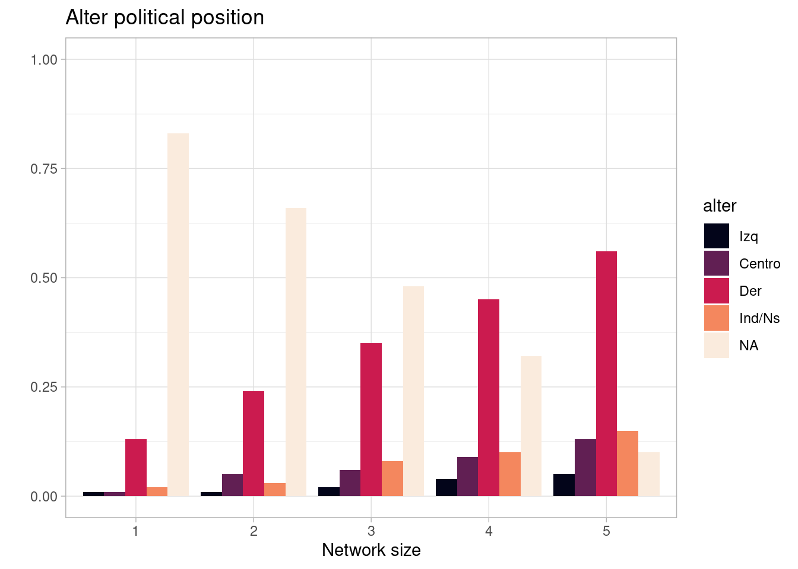
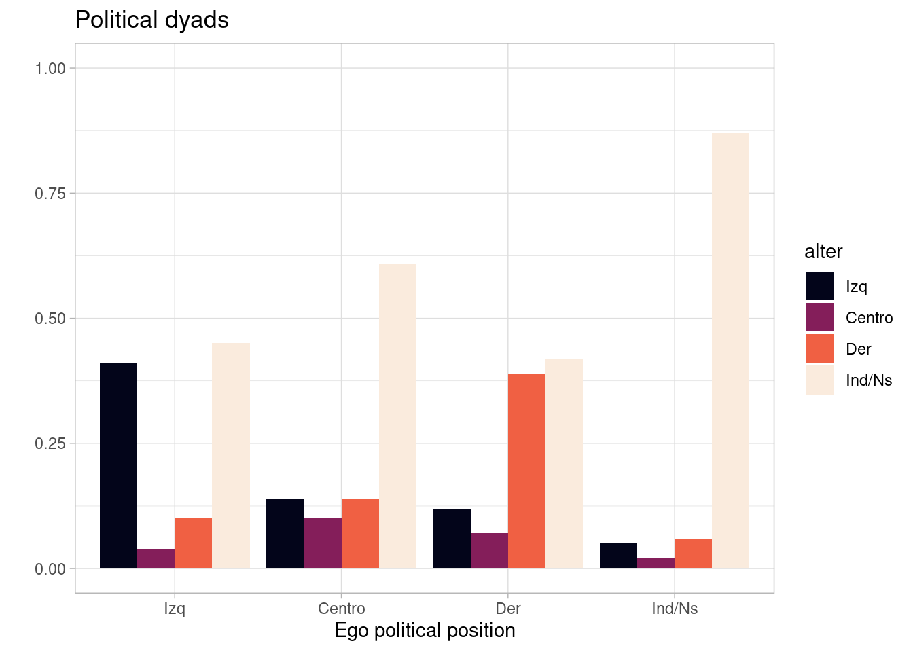
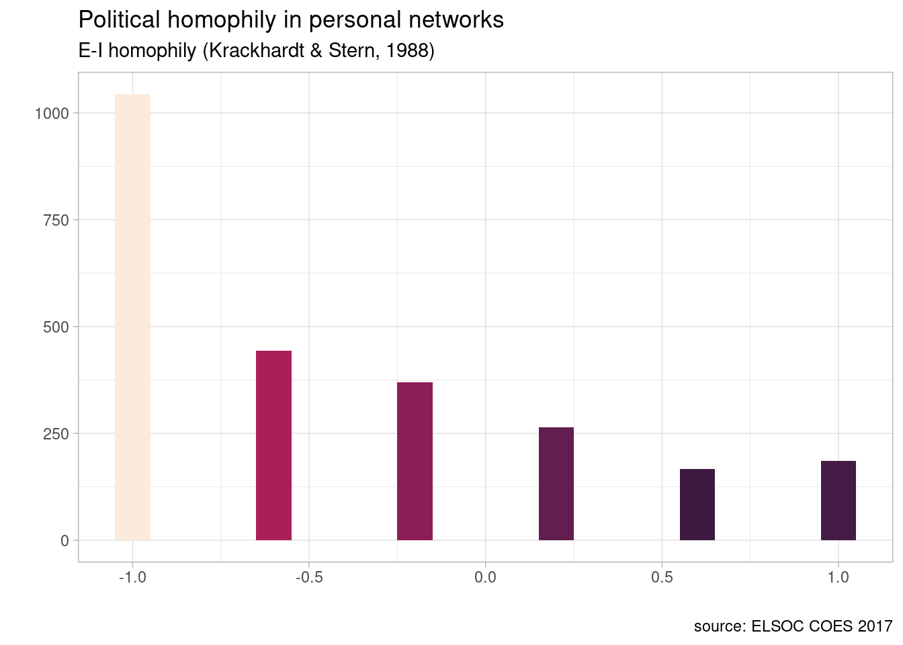

pacman::p_load(ggplot2,
ggthemes,
tidyverse,
sjlabelled,
sjPlot,
car,
vcd,
texreg,
ordinal,
nnet,
MASS,
mlogit,
matrixStats,
expss,
sjlabelled,
sjmisc,
tidyverse,
weights,
survey,
viridis)En el presente documento se realiza un trabajo de datos para construir una base en formato long con la encuesta COES en su ola w2 y ola w4. Adicionalmente, se analizan datos panel con el modelo within-between (Bell & Jhones, 2014; Bell et al. 2019), ideales para el análisis de estructuras jerárquicas de datos, incluidos los datos datos de series de tiempo (de corte transversal), y de tipo panel.
El objetivo es explorar potenciales relaciones entre indicadores de homofilia y algunos indicadores de comportamiento cívico. El análisis de datos es realizado con el paquete panelr, diseñado para entorno R, el cual tiene como base el paquete lm4. Se prefiere el primero puesto que se reducen sustantivamente procedimientos y lineas de códigos y se obtienen los mismos resultados que si se realizará con el pquete lm4.
Para atributos categóricos de los alter de la red ego, además de la proporción de alter similares a ego, una medida generalmente usada ha sido el índice EI (Krackhardt & Stern, 1988, Perry et al., 2018). Esta medida se define como el número de alter diferentes de ego (lazos externos E) menos el número de alter iguales a ego (lazos internos I), dividido por el número de alter. Esta es una medida “reversa” de homofilia toa vez que una medida alta de este índice índica mayor heterofilia. Además, debido a que es una transformación lineal de la medida de proporción de lazos homofilicos, su correlación es un perfecto -.1
\[EI = \frac{E - I}{E + I}\]
A continuación, desarrollamos el trabajo de código. Todo el análisis es realizado con datos de la encuesta ELSOC COES, considerando las olas 2 y 4. Las bases de datos y la documentación pueden ser descargadas desde el siguiente link
Cargar librerias y bbdd
Cargamos data
load("/home/rober/Documents/ricantillan.rbind.io/dat/ELSOC/ELSOC_W02_v3.00_R.RData")
load("/home/rober/Documents/ricantillan.rbind.io/dat/ELSOC/ELSOC_W04_v2.01_R.RData")Subset 2017
# Armar BBDD 2019
ego2017 <- elsoc_2017 %>%
dplyr::select(idencuesta,
sexo=m0_sexo,
sexoalter01=r13_sexo_01,
sexoalter02=r13_sexo_02,
sexoalter03=r13_sexo_03,
sexoalter04=r13_sexo_04,
sexoalter05=r13_sexo_05,
edad=m0_edad,
edadalter01=r13_edad_01,
edadalter02=r13_edad_02,
edadalter03=r13_edad_03,
edadalter04=r13_edad_04,
edadalter05=r13_edad_05,
relig=m38,
religalter01=r13_relig_01,
religalter02=r13_relig_02,
religalter03=r13_relig_03,
religalter04=r13_relig_04,
religalter05=r13_relig_05,
educ=m01,
educalter01=r13_educ_01,
educalter02=r13_educ_02,
educalter03=r13_educ_03,
educalter04=r13_educ_04,
educalter05=r13_educ_05,
ideol=c15,
ideolalter01=r13_ideol_01,
ideolalter02=r13_ideol_02,
ideolalter03=r13_ideol_03,
ideolalter04=r13_ideol_04,
ideolalter05=r13_ideol_05,
c08_01,
c08_02,
c08_03,
c08_04,
ponderador01) Revisar BBDD
ego2017 <- data.frame(ego2017)
#head(ego2017)
dim(ego2017)[1] 2473 36# Definir NA's
ego2017[ego2017=="-999"] <- NA
ego2017[ego2017=="-888"] <- NARecod variables 2017
Sexo
sexolab<-c("hombre","mujer")
ego2017$sexo_h<-factor(Recode(ego2017$sexo,"1=1;2=2;-888=NA;-999=NA"),labels=sexolab)
ego2017$alterSexo1<-factor(Recode(ego2017$sexoalter01,"1=1;2=2;-888=NA;-999=NA"),labels=sexolab)
ego2017$alterSexo2<-factor(Recode(ego2017$sexoalter02,"1=1;2=2;-888=NA;-999=NA"),labels=sexolab)
ego2017$alterSexo3<-factor(Recode(ego2017$sexoalter03,"1=1;2=2;-888=NA;-999=NA"),labels=sexolab)
ego2017$alterSexo4<-factor(Recode(ego2017$sexoalter04,"1=1;2=2;-888=NA;-999=NA"),labels=sexolab)
ego2017$alterSexo5<-factor(Recode(ego2017$sexoalter05,"1=1;2=2;-888=NA;-999=NA"),labels=sexolab)
with(ego2017, summary(cbind(alterSexo1,alterSexo2,alterSexo3,alterSexo4,alterSexo5))) alterSexo1 alterSexo2 alterSexo3 alterSexo4
Min. :1.000 Min. :1.000 Min. :1.000 Min. :1.000
1st Qu.:1.000 1st Qu.:1.000 1st Qu.:1.000 1st Qu.:1.000
Median :2.000 Median :2.000 Median :2.000 Median :2.000
Mean :1.617 Mean :1.583 Mean :1.552 Mean :1.546
3rd Qu.:2.000 3rd Qu.:2.000 3rd Qu.:2.000 3rd Qu.:2.000
Max. :2.000 Max. :2.000 Max. :2.000 Max. :2.000
NA's :1 NA's :372 NA's :864 NA's :1370
alterSexo5
Min. :1.000
1st Qu.:1.000
Median :2.000
Mean :1.557
3rd Qu.:2.000
Max. :2.000
NA's :1692 Edad
edadlab <- c("18-24", "25-34", "35-44", "45-54", "55-64", ">65")
ego2017$edadR<-factor(Recode(ego2017$edad,"lo:24=1;25:34=2;35:44=3;45:54=4;55:64=5;65:hi=6"),labels=edadlab)
ego2017$alterAge1<-factor(Recode(ego2017$edadalter01,"lo:24=1;25:34=2;35:44=3;45:54=4;55:64=5;65:hi=6"),labels=edadlab)
ego2017$alterAge2<-factor(Recode(ego2017$edadalter02,"lo:24=1;25:34=2;35:44=3;45:54=4;55:64=5;65:hi=6"),labels=edadlab)
ego2017$alterAge3<-factor(Recode(ego2017$edadalter03,"lo:24=1;25:34=2;35:44=3;45:54=4;55:64=5;65:hi=6"),labels=edadlab)
ego2017$alterAge4<-factor(Recode(ego2017$edadalter04,"lo:24=1;25:34=2;35:44=3;45:54=4;55:64=5;65:hi=6"),labels=edadlab)
ego2017$alterAge5<-factor(Recode(ego2017$edadalter05,"lo:24=1;25:34=2;35:44=3;45:54=4;55:64=5;65:hi=6"),labels=edadlab)
with(ego2017, summary(cbind(alterAge1,alterAge2,alterAge3,alterAge4,alterAge5))) alterAge1 alterAge2 alterAge3 alterAge4 alterAge5
Min. :1.000 Min. :1.000 Min. :1.000 Min. :1.000 Min. :1.00
1st Qu.:2.000 1st Qu.:2.000 1st Qu.:2.000 1st Qu.:2.000 1st Qu.:2.00
Median :4.000 Median :3.000 Median :3.000 Median :3.000 Median :3.00
Mean :3.607 Mean :3.376 Mean :3.328 Mean :3.312 Mean :3.37
3rd Qu.:5.000 3rd Qu.:5.000 3rd Qu.:5.000 3rd Qu.:5.000 3rd Qu.:5.00
Max. :6.000 Max. :6.000 Max. :6.000 Max. :6.000 Max. :6.00
NA's :1 NA's :372 NA's :864 NA's :1370 NA's :1692 Religión
rellab = c("Catolico","Evangelico","Otra Religion","no religioso")
ego2017$religid<-factor(Recode(ego2017$relig,"1=1;2=2;3:6=3;7:9=4;-999:-888=4"),labels=rellab)
ego2017$alterRelig1<-factor(Recode(ego2017$religalter01,"1=1;2=2;3:4=4;5=3;-999:-888=4"),labels=rellab)
ego2017$alterRelig2<-factor(Recode(ego2017$religalter02,"1=1;2=2;3:4=4;5=3;-999:-888=4"),labels=rellab)
ego2017$alterRelig3<-factor(Recode(ego2017$religalter03,"1=1;2=2;3:4=4;5=3;-999:-888=4"),labels=rellab)
ego2017$alterRelig4<-factor(Recode(ego2017$religalter04,"1=1;2=2;3:4=4;5=3;-999:-888=4"),labels=rellab)
ego2017$alterRelig5<-factor(Recode(ego2017$religalter05,"1=1;2=2;3:4=4;5=3;-999:-888=4"),labels=rellab)
with(ego2017, summary(cbind(alterRelig1,alterRelig2,alterRelig3,alterRelig4,alterRelig5))) alterRelig1 alterRelig2 alterRelig3 alterRelig4
Min. :1.000 Min. :1.000 Min. :1.000 Min. :1.000
1st Qu.:1.000 1st Qu.:1.000 1st Qu.:1.000 1st Qu.:1.000
Median :1.000 Median :1.000 Median :1.000 Median :1.000
Mean :1.747 Mean :1.762 Mean :1.836 Mean :1.784
3rd Qu.:2.000 3rd Qu.:2.000 3rd Qu.:2.000 3rd Qu.:2.000
Max. :4.000 Max. :4.000 Max. :4.000 Max. :4.000
NA's :1 NA's :372 NA's :864 NA's :1370
alterRelig5
Min. :1.000
1st Qu.:1.000
Median :1.000
Mean :1.809
3rd Qu.:2.000
Max. :4.000
NA's :1692 Educación
edulab = c("Basica", "Media", "Sup. Tecnica", "Sup. Univ")
ego2017$educaF<-factor(Recode(ego2017$educ,"1:3=1;4:5=2;6:7=3;8:10=4;-888=NA;-999=NA"),labels=edulab)
ego2017$alterEduca1<-factor(Recode(ego2017$educalter01,"1=1;2:3=2;4=3;5=4;-888=NA;-999=NA"),labels=edulab)
ego2017$alterEduca2<-factor(Recode(ego2017$educalter02,"1=1;2:3=2;4=3;5=4;-888=NA;-999=NA"),labels=edulab)
ego2017$alterEduca3<-factor(Recode(ego2017$educalter03,"1=1;2:3=2;4=3;5=4;-888=NA;-999=NA"),labels=edulab)
ego2017$alterEduca4<-factor(Recode(ego2017$educalter04,"1=1;2:3=2;4=3;5=4;-888=NA;-999=NA"),labels=edulab)
ego2017$alterEduca5<-factor(Recode(ego2017$educalter05,"1=1;2:3=2;4=3;5=4;-888=NA;-999=NA"),labels=edulab)
with(ego2017, summary(cbind(alterEduca1,alterEduca2,alterEduca3,alterEduca4,alterEduca5))) alterEduca1 alterEduca2 alterEduca3 alterEduca4
Min. :1.000 Min. :1.000 Min. :1.000 Min. :1.000
1st Qu.:2.000 1st Qu.:2.000 1st Qu.:2.000 1st Qu.:2.000
Median :2.000 Median :2.000 Median :2.000 Median :2.000
Mean :2.344 Mean :2.394 Mean :2.438 Mean :2.489
3rd Qu.:3.000 3rd Qu.:3.000 3rd Qu.:3.000 3rd Qu.:4.000
Max. :4.000 Max. :4.000 Max. :4.000 Max. :4.000
NA's :142 NA's :481 NA's :940 NA's :1412
alterEduca5
Min. :1.000
1st Qu.:2.000
Median :2.000
Mean :2.454
3rd Qu.:3.000
Max. :4.000
NA's :1724 Posición Política
pollab <- c("Izq", "Centro", "Der", "Ind/Ninguno", "NA")
ego2017$izqderR<-factor(Recode(ego2017$ideol,"0:3=1;4:6=2;7:10=3;11:12=4;NA=5"),labels=pollab)
ego2017$alterPospol1=factor(Recode(ego2017$ideolalter01,"1:2=3;3=2;4:5=1;6=4;NA=5"),labels=pollab)
ego2017$alterPospol2=factor(Recode(ego2017$ideolalter02,"1:2=3;3=2;4:5=1;6=4;NA=5"),labels=pollab)
ego2017$alterPospol3=factor(Recode(ego2017$ideolalter03,"1:2=3;3=2;4:5=1;6=4;NA=5"),labels=pollab)
ego2017$alterPospol4=factor(Recode(ego2017$ideolalter04,"1:2=3;3=2;4:5=1;6=4;NA=5"),labels=pollab)
ego2017$alterPospol5=factor(Recode(ego2017$ideolalter05,"1:2=3;3=2;4:5=1;6=4;NA=5"),labels=pollab)
with(ego2017,summary(cbind(alterPospol1,alterPospol2,alterPospol3,alterPospol4,alterPospol5))) alterPospol1 alterPospol2 alterPospol3 alterPospol4 alterPospol5
Min. :1.00 Min. :1.000 Min. :1.000 Min. :1.000 Min. :1.000
1st Qu.:3.00 1st Qu.:3.000 1st Qu.:4.000 1st Qu.:4.000 1st Qu.:4.000
Median :4.00 Median :4.000 Median :4.000 Median :5.000 Median :5.000
Mean :3.58 Mean :3.747 Mean :4.013 Mean :4.318 Mean :4.493
3rd Qu.:4.00 3rd Qu.:5.000 3rd Qu.:5.000 3rd Qu.:5.000 3rd Qu.:5.000
Max. :5.00 Max. :5.000 Max. :5.000 Max. :5.000 Max. :5.000 Tamaño de la red
ego2017$tamred = as.numeric(!is.na(ego2017$sexoalter01)) +
as.numeric(!is.na(ego2017$sexoalter02)) +
as.numeric(!is.na(ego2017$sexoalter03)) +
as.numeric(!is.na(ego2017$sexoalter04)) +
as.numeric(!is.na(ego2017$sexoalter05))
print(prop.table(table(ego2017$tamred)), 2)
0 1 2 3 4 5
0.0004 0.1500 0.1989 0.2046 0.1302 0.3158 ego2017$tamred[ego2017$tamred==0] <- NA
table(ego2017$tamred)
1 2 3 4 5
371 492 506 322 781 Plot tamred
posición política de alteres segun tamaño de la red de ego.
ego2017$alterPospol1t<-Recode(ego2017$alterPospol1,"1:2=3;3=2;4:5=1;6:5=4")
ego2017$alterPospol2t<-Recode(ego2017$alterPospol2,"1:2=3;3=2;4:5=1;6:5=4")
ego2017$alterPospol3t<-Recode(ego2017$alterPospol3,"1:2=3;3=2;4:5=1;6:5=4")
ego2017$alterPospol4t<-Recode(ego2017$alterPospol4,"1:2=3;3=2;4:5=1;6:5=4")
ego2017$alterPospol5t<-Recode(ego2017$alterPospol5,"1:2=3;3=2;4:5=1;6:5=4")
Tpospol1=with(ego2017,table(tamred,alterPospol1t), na.rm=T)
Tpospol2=with(ego2017,table(tamred,alterPospol2t), na.rm=T)
Tpospol3=with(ego2017,table(tamred,alterPospol3t), na.rm=T)
Tpospol4=with(ego2017,table(tamred,alterPospol4t), na.rm=T)
Tpospol5=with(ego2017,table(tamred,alterPospol5t), na.rm=T)
Hpospol=Tpospol1+Tpospol2+Tpospol3+Tpospol4+Tpospol5
Hpospol=round(Hpospol, 0)
dimnames(Hpospol)=list(tamred= c("1", "2", "3", "4","5"),
alter = c("Izq", "Centro", "Der", "Ind/Ns", "NA"))
hom_tam<-as.data.frame(round(prop.table(Hpospol,1),2))
hom_tam%>%
drop_na()%>%
ggplot(aes(x = tamred, y = Freq, fill = alter, na.rm = TRUE), weight = ponderador01) +
geom_bar(position = 'dodge', stat = 'identity') +
labs(title = "Alter political position", x = "Network size", y = "") +
scale_fill_viridis_d(alpha = 1, begin = 0, end = 1, direction = 1, option = "F",) +
scale_y_continuous(limits = c(0, 1)) +
theme_light()
Homofilia por posición política
library(car)
#rec
ego2017$izqderRx<-Recode(ego2017$ideol,"0:3=1;3:6=2;7:10=3;11:12=4;-999:-888=NA")
ego2017$alterPospol1x=Recode(ego2017$ideolalter01,"1:2=3;3=2;4:5=1;6=4;-999:-888=NA")
ego2017$alterPospol2x=Recode(ego2017$ideolalter02,"1:2=3;3=2;4:5=1;6=4;-999:-888=NA")
ego2017$alterPospol3x=Recode(ego2017$ideolalter03,"1:2=3;3=2;4:5=1;6=4;-999:-888=NA")
ego2017$alterPospol4x=Recode(ego2017$ideolalter04,"1:2=3;3=2;4:5=1;6=4;-999:-888=NA")
ego2017$alterPospol5x=Recode(ego2017$ideolalter05,"1:2=3;3=2;4:5=1;6=4;-999:-888=NA")
Tpospol1=with(ego2017,table(izqderRx,alterPospol1x))
Tpospol2=with(ego2017,table(izqderRx,alterPospol2x))
Tpospol3=with(ego2017,table(izqderRx,alterPospol3x))
Tpospol4=with(ego2017,table(izqderRx,alterPospol4x))
Tpospol5=with(ego2017,table(izqderRx,alterPospol5x))
Hpospol=Tpospol1+Tpospol2+Tpospol3+Tpospol4+Tpospol5
Hpospol=round(Hpospol, 0)
dimnames(Hpospol)=list(ego=c("Izq", "Centro", "Der", "Ind/Ns"),
alter=c("Izq", "Centro", "Der", "Ind/Ns"))
round(prop.table(Hpospol,1),2) alter
ego Izq Centro Der Ind/Ns
Izq 0.41 0.04 0.10 0.45
Centro 0.14 0.10 0.14 0.61
Der 0.12 0.07 0.39 0.42
Ind/Ns 0.05 0.02 0.06 0.87qq3<-as.data.frame(round(prop.table(Hpospol,1),2))
qq3%>%
ggplot(aes(x=ego, y=Freq, fill=alter), weight = ponderador01) +
geom_bar(position = 'dodge', stat='identity') +
labs(title="Political dyads", x="Ego political position", y="")+
scale_fill_viridis_d(alpha = 1, begin = 0, end = 1, direction = 1, option = "F",) +
scale_y_continuous(limits = c(0, 1))+
theme_light()
Cálculo E-I homofilia por posición política (ELSOC 2017)
Indice E-I de Krackhardt y Stern (1988).
Creamos los alteres como externos (con otras categorías distinta a la del ego) o como internos (misma categoría que el ego). Los valores de -1 implican perfecta homofilia y los valores de +1 corresponden a perfecta heterofilia.
EI posición política
ego2017$pospol_alt1_clasif<-ifelse(ego2017$izqderR==ego2017$alterPospol1,"External", "Internal")
ego2017$pospol_alt2_clasif<-ifelse(ego2017$izqderR==ego2017$alterPospol2,"External", "Internal")
ego2017$pospol_alt3_clasif<-ifelse(ego2017$izqderR==ego2017$alterPospol3,"External", "Internal")
ego2017$pospol_alt4_clasif<-ifelse(ego2017$izqderR==ego2017$alterPospol4,"External", "Internal")
ego2017$pospol_alt5_clasif<-ifelse(ego2017$izqderR==ego2017$alterPospol5,"External", "Internal")
#Ahora se agrega la información sobre los tipos de vínculos
ego2017$pospol_external<-count_row_if(criterion = "External",
ego2017$pospol_alt1_clasif,
ego2017$pospol_alt2_clasif,
ego2017$pospol_alt3_clasif,
ego2017$pospol_alt4_clasif,
ego2017$pospol_alt5_clasif)
ego2017$pospol_internal<-count_row_if(criterion = "Internal",
ego2017$pospol_alt1_clasif,
ego2017$pospol_alt2_clasif,
ego2017$pospol_alt3_clasif,
ego2017$pospol_alt4_clasif,
ego2017$pospol_alt5_clasif)
#Finalmente, calculamos el indicador EI
ego2017$EI_index_pospol<-(ego2017$pospol_external-ego2017$pospol_internal)/
(ego2017$pospol_external+ego2017$pospol_internal)
summary(ego2017$EI_index_pospol) Min. 1st Qu. Median Mean 3rd Qu. Max.
-1.000 -1.000 -0.600 -0.423 -0.200 1.000 EI religión
ego2017$alterRelig1_clasif<-ifelse(ego2017$religid==ego2017$alterRelig1,"External","Internal")
ego2017$alterRelig2_clasif<-ifelse(ego2017$religid==ego2017$alterRelig2,"External","Internal")
ego2017$alterRelig3_clasif<-ifelse(ego2017$religid==ego2017$alterRelig3,"External","Internal")
ego2017$alterRelig4_clasif<-ifelse(ego2017$religid==ego2017$alterRelig4,"External","Internal")
ego2017$alterRelig5_clasif<-ifelse(ego2017$religid==ego2017$alterRelig5,"External","Internal")
#Ahora se agrega la información sobre los tipos de vínculos
ego2017$relig_external<-count_row_if(criterion = "External",
ego2017$alterRelig1_clasif,
ego2017$alterRelig2_clasif,
ego2017$alterRelig3_clasif,
ego2017$alterRelig4_clasif,
ego2017$alterRelig5_clasif)
ego2017$relig_internal<-count_row_if(criterion = "Internal",
ego2017$alterRelig1_clasif,
ego2017$alterRelig2_clasif,
ego2017$alterRelig3_clasif,
ego2017$alterRelig4_clasif,
ego2017$alterRelig5_clasif)
#Finalmente, calculamos el indicador EI
ego2017$EI_index_relig<-(ego2017$relig_external-ego2017$relig_internal)/
(ego2017$relig_external+ego2017$relig_internal)
summary(ego2017$EI_index_relig) Min. 1st Qu. Median Mean 3rd Qu. Max. NA's
-1.0000 -0.3333 0.6000 0.2776 1.0000 1.0000 8 EI educación
ego2017$alterEduca1_clasif<-ifelse(ego2017$educaF==ego2017$alterEduca1,"External","Internal")
ego2017$alterEduca2_clasif<-ifelse(ego2017$educaF==ego2017$alterEduca2,"External","Internal")
ego2017$alterEduca3_clasif<-ifelse(ego2017$educaF==ego2017$alterEduca3,"External","Internal")
ego2017$alterEduca4_clasif<-ifelse(ego2017$educaF==ego2017$alterEduca4,"External","Internal")
ego2017$alterEduca5_clasif<-ifelse(ego2017$educaF==ego2017$alterEduca5,"External","Internal")
#Ahora se agrega la información sobre los tipos de vínculos
ego2017$educ_external<-count_row_if(criterion = "External",
ego2017$alterEduca1_clasif,
ego2017$alterEduca2_clasif,
ego2017$alterEduca3_clasif,
ego2017$alterEduca4_clasif,
ego2017$alterEduca5_clasif)
ego2017$educ_internal<-count_row_if(criterion = "Internal",
ego2017$alterEduca1_clasif,
ego2017$alterEduca2_clasif,
ego2017$alterEduca3_clasif,
ego2017$alterEduca4_clasif,
ego2017$alterEduca5_clasif)
#Finalmente, calculamos el indicador EI
ego2017$EI_index_educ<-(ego2017$educ_external-ego2017$educ_internal)/
(ego2017$educ_external+ego2017$educ_internal)
summary(ego2017$EI_index_educ) Min. 1st Qu. Median Mean 3rd Qu. Max. NA's
-1.00000 -1.00000 0.00000 -0.03621 0.60000 1.00000 59 EI Sexo
ego2017$alterSexo1_clasif<-ifelse(ego2017$sexo_h==ego2017$alterSexo1,"External","Internal")
ego2017$alterSexo2_clasif<-ifelse(ego2017$sexo_h==ego2017$alterSexo2,"External","Internal")
ego2017$alterSexo3_clasif<-ifelse(ego2017$sexo_h==ego2017$alterSexo3,"External","Internal")
ego2017$alterSexo4_clasif<-ifelse(ego2017$sexo_h==ego2017$alterSexo4,"External","Internal")
ego2017$alterSexo5_clasif<-ifelse(ego2017$sexo_h==ego2017$alterSexo5,"External","Internal")
#Ahora se agrega la información sobre los tipos de vínculos
ego2017$sexo_external<-count_row_if(criterion = "External",
ego2017$alterSexo1_clasif,
ego2017$alterSexo2_clasif,
ego2017$alterSexo3_clasif,
ego2017$alterSexo4_clasif,
ego2017$alterSexo5_clasif)
ego2017$sexo_internal<-count_row_if(criterion = "Internal",
ego2017$alterSexo1_clasif,
ego2017$alterSexo2_clasif,
ego2017$alterSexo3_clasif,
ego2017$alterSexo4_clasif,
ego2017$alterSexo5_clasif)
#Finalmente, calculamos el indicador EI
ego2017$EI_index_sexo<-(ego2017$sexo_external-ego2017$sexo_internal)/
(ego2017$sexo_external+ego2017$sexo_internal)
summary(ego2017$EI_index_sexo) Min. 1st Qu. Median Mean 3rd Qu. Max. NA's
-1.0000 -0.2000 0.3333 0.2583 1.0000 1.0000 1 EI edad
ego2017$alterAge1_clasif<-ifelse(ego2017$edadR==ego2017$alterAge1,"External","Internal")
ego2017$alterAge2_clasif<-ifelse(ego2017$edadR==ego2017$alterAge2,"External","Internal")
ego2017$alterAge3_clasif<-ifelse(ego2017$edadR==ego2017$alterAge3,"External","Internal")
ego2017$alterAge4_clasif<-ifelse(ego2017$edadR==ego2017$alterAge4,"External","Internal")
ego2017$alterAge5_clasif<-ifelse(ego2017$edadR==ego2017$alterAge5,"External","Internal")
#Ahora se agrega la información sobre los tipos de vínculos
ego2017$age_external<-count_row_if(criterion = "External",
ego2017$alterAge1_clasif,
ego2017$alterAge2_clasif,
ego2017$alterAge3_clasif,
ego2017$alterAge4_clasif,
ego2017$alterAge5_clasif)
ego2017$age_internal<-count_row_if(criterion = "Internal",
ego2017$alterAge1_clasif,
ego2017$alterAge2_clasif,
ego2017$alterAge3_clasif,
ego2017$alterAge4_clasif,
ego2017$alterAge5_clasif)
#Finalmente, calculamos el indicador EI
ego2017$EI_index_age<-(abs(ego2017$age_external-ego2017$age_internal)/
(ego2017$age_external+ego2017$age_internal))
summary(ego2017$EI_index_age) Min. 1st Qu. Median Mean 3rd Qu. Max. NA's
0.0000 0.3333 0.6000 0.6177 1.0000 1.0000 1 ## Ploteamos
ggplot(data = ego2017) +
geom_histogram(mapping = aes(x = EI_index_pospol, fill = ..count..),
binwidth = 0.1,
weight = "ponderador01") +
scale_fill_viridis_c(direction = 1, option = "F", guide = FALSE) +
labs(title = "Political homophily in personal networks",
subtitle = "E-I homophily (Krackhardt & Stern, 1988)",
caption = "source: ELSOC COES 2017",
x = "",
y = "") +
theme_light()
Bibliografía
- Krackhardt, D., & Stern, R. N. (1988). Informal networks and organizational crises: An experimental simulation. Social Psychology Quarterly, 123–140.
Reuse
Citation
For attribution, please cite this work as:
Cantillan, Roberto. 2023. “EI Index.” August 9, 2023.